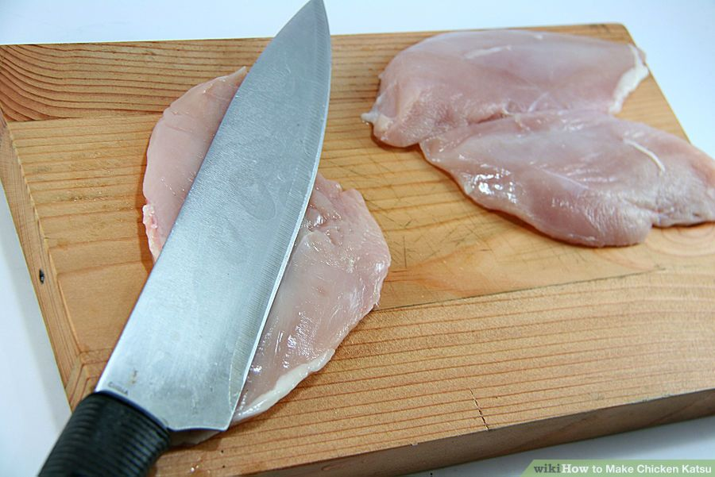
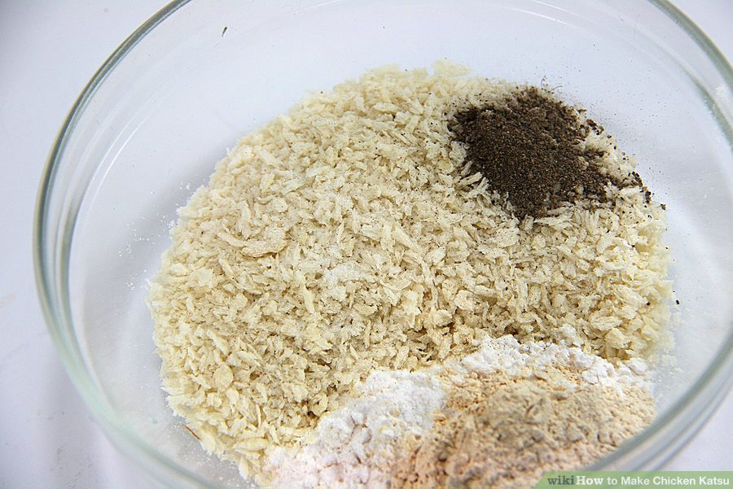
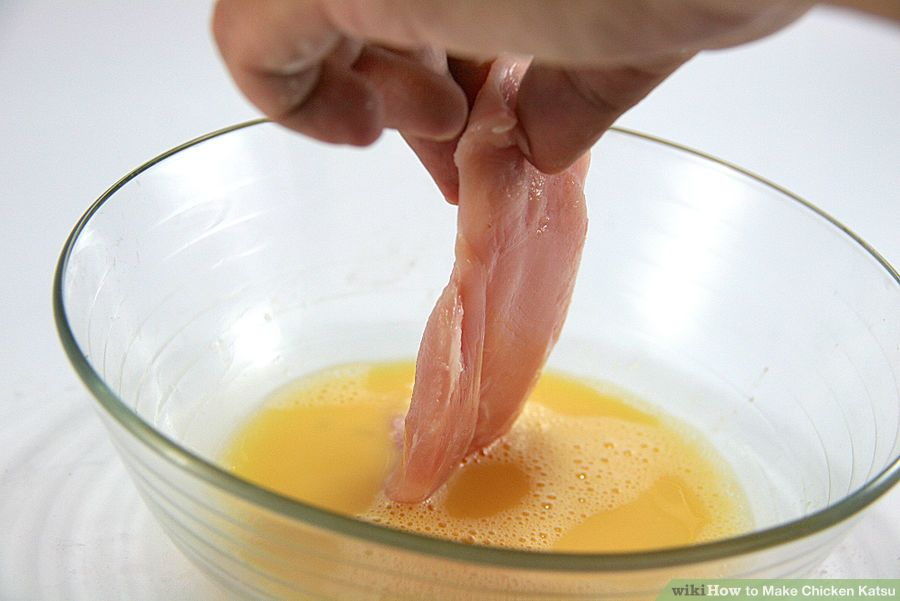
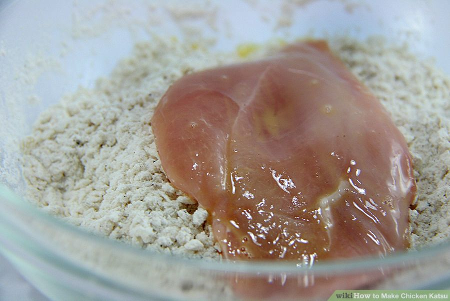
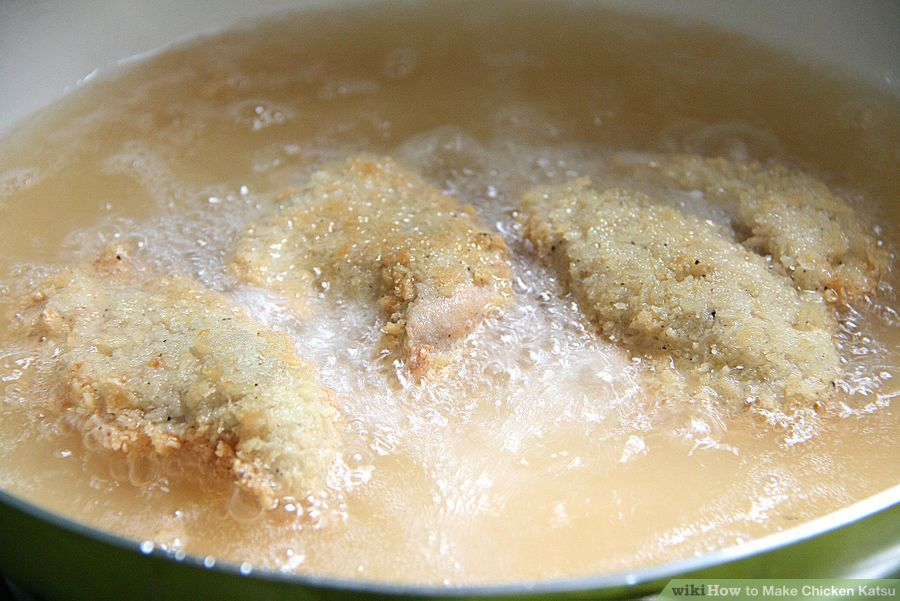
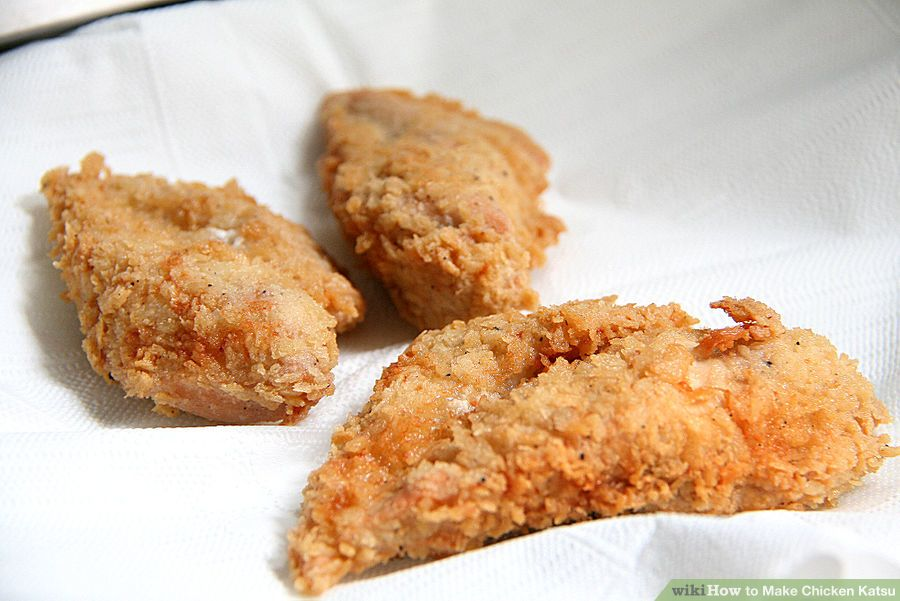

5 lbs (2.3 kg) of chicken thighs or breast tender pieces (de-boned)
Salt
Pepper
Garlic powder
Flour
2 eggs (beaten)
Corn flake crumbs or panko (Japanese bread crumbs)
Oil (for deep frying)
For Sauce
1/3 cup (80 mL) of ketchup
1/4 cup (60 mL) of shoyu or soy sauce
1/4 cup (50 g) of sugar
2 teaspoons (10 mL) of Worcestershire sauce
1/4 teaspoon of red pepper (ground)
1/4 teaspoon of pepper
Instructions
Make sure that the chicken thighs are de-boned. If needed, cut off any excess fat. Lightly pound each piece with the side of a knife's blade to flatten out the sides.

Get a bowl or a plastic Ziploc bag. Place the panko bread crumbs, garlic powder, flour, pepper, and salt in it. Mix the dry ingredients thoroughly.

Dip, not soak, the chicken into the egg batter.

Lay the chicken in the cornflake crumbs or panko and be sure to coat them.

Get your wok or a large skillet heated with the cooking oil. Once the oil is hot and sizzling, slowly drop the chicken pieces into the pan. Use the sides of the pan to drop the pieces; this is to avoid any oil splattering.

Remove chicken pieces from the pan once they are golden brown in color. You can also check if the chicken is well cooked by piercing and opening a slit.

Cut into slices and serve on a bed of lettuce or cabbage.